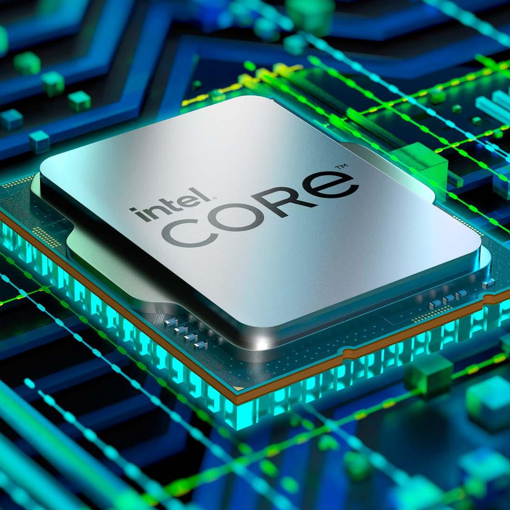
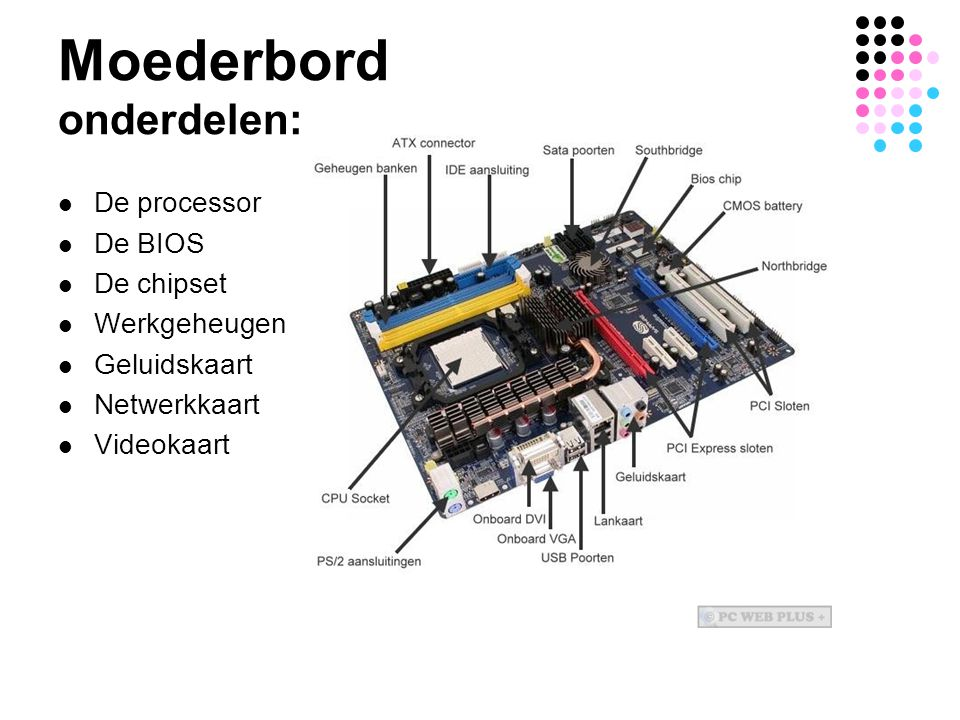

Een processor, ook wel bekend als CPU, bestaat uit ALU en Control unit. De ALU is het rekenkundige en logische brein van de processor, het voert wiskundige bewerkingen uit. De Control unit is verantwoordelijk voor het coördineren van de werking van de processor. Het haalt instructies op uit het geheugen, decodeert ze en zorgt ervoor dat de juiste bewerkingen worden uitgevoerd door de ALU. Samen vormen ze de kern van de CPU en stellen ze de computer in staat om complexe taken uit te voeren.

-Het uitvoeren van instructies
-Verwerken van gegevens
-Beheren van gegevensopslag
-Coördineren van processen
-Afhandelen van invoer/uitvoer-operaties
RAM, wat staat voor Random Access Memory, is een type computergeheugen dat wordt gebruikt om tijdelijk gegevens en programma's op te slaan terwijl de computer actief is. Dit zorgt ervoor dat de CPU in staat is om snel toegang te krijgen tot gegevens die nodig zijn voor lopende taken, wat de prestaties verbetert. ROM, wat staat voor Read Only Memory, is een type geheugen dat gegevens bevat die permanent zijn opgeslagen en niet worden gewist wanneer de computer wordt uitgeschakeld.
In de informatica verwijst een "bus" naar een communicatiekanaal dat wordt gebruikt om gegevens en signalen tussen verschillende componenten van bijvoorbeeld een computer te verzenden. Bussen spelen een cruciale rol bij het overdragen van gegevens binnen een computer, tussen de CPU, het geheugen, opslagapparaten en randapparatuur.
De Von Neumann-architectuur vormt de basis voor de meeste moderne computers en heeft bijgedragen aan de ontwikkeling van de huidige generatie computersystemen. Het maakt het mogelijk om complexe berekeningen uit te voeren door het ophalen, uitvoeren en opslaan van instructies en gegevens op een gestructureerde manier.Deze architectuur maakt gebruik van 3 verschillende onderdelen: de CPU, het geheugen en invoer/uitvoer. Er wordt informatie ingevoerd, dit wordt verwerkt via de CPU. Deze gegevens worden opgeslagen door het geheugen en worden vervolgens via de CPU weer uitgevoerd.
Het moederbord fungeert als het centrale zenuwstelsel van de computer en verbindt onder andere de CPU, het geheugen en de opslagapparaten, waardoor ze effectief met elkaar kunnen communiceren. Het heeft ook aansluitingen voor apparaten zoals muizen en toetsenborden. Het moederbord is een cruciaal onderdeel voor de werking van een apparaat.

Een "System-on-a-Chip" (SoC) is als een miniatuur computer op een chip. Het bevat alle belangrijke onderdelen die nodig zijn voor een apparaat, zoals een smartphone of tablet, zoals de processor, geheugen, en andere functies. Het maakt apparaten krachtig en energiezuinig omdat alles compact op één chip is geïntegreerd. Denk eraan als de "hersenen" van een apparaat op een chip. SoC's worden vaak gebruikt in smartphones en tablets omdat ze compact en efficiënt zijn.
Permanent geheugen, of opslagmedia, is waar de computer informatie langdurig bewaart, zoals programma's en bestanden. Het wordt ook opgeslagen wanneer de computer uitgeschakeld is, in tegenstelling tot bijvoorbeeld RAM. Harde schijven en flash geheugen behoren onder andere tot het permanent geheugen.
Randapparatuur in informatica zijn de extra apparaten die je aan een computer kunt aansluiten om extra functies toe te voegen of de interactie met de computer te verbeteren. U kunt dan denken aan dingen zoals toetsenborden, muizen, printers, luidsprekers, webcams, enzovoort.
Verbindingen, ook wel kabels en interfaces genoemd, zijn manieren om apparaten met elkaar te verbinden en gegevens te delen. Denk aan USB-kabels om een muis aan te sluiten, HDMI-kabels voor het aansluiten van een monitor, of netwerkkabels voor internetverbinding. Deze verbindingen maken het mogelijk dat apparaten met elkaar communiceren en informatie uitwisselen.